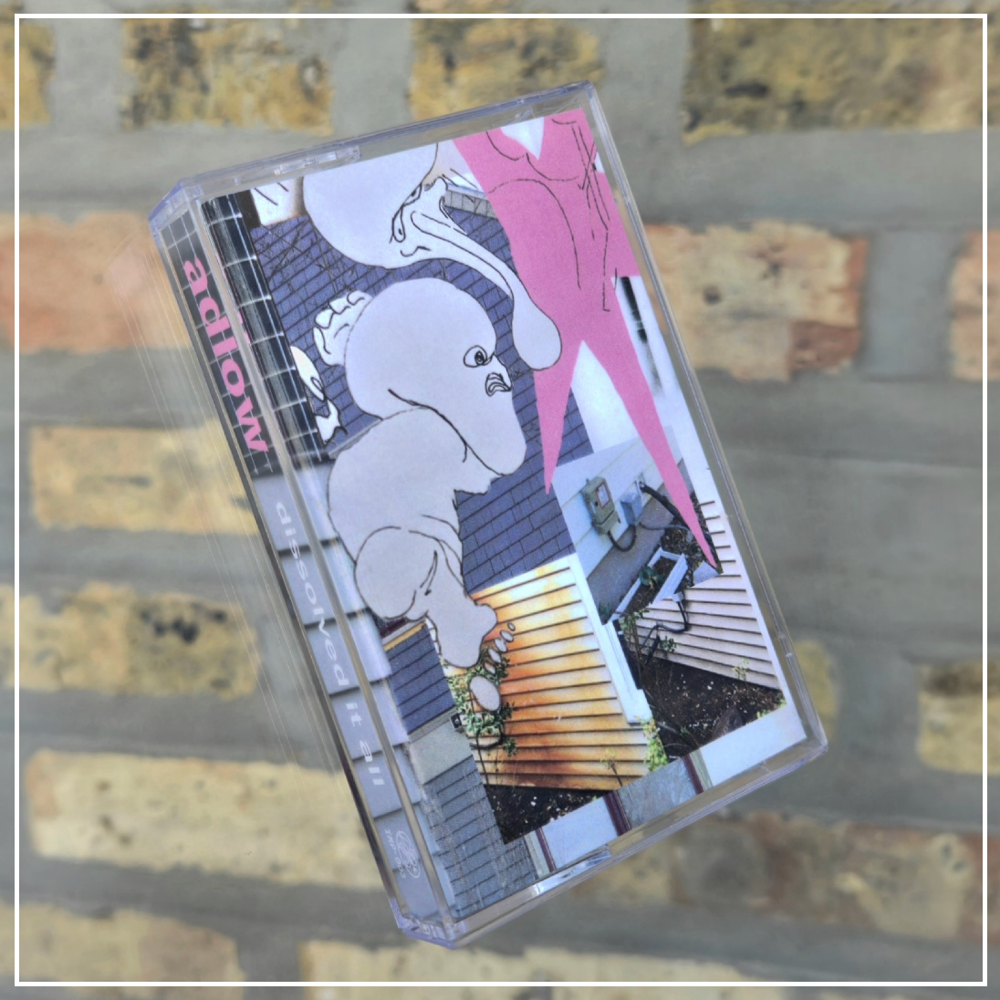
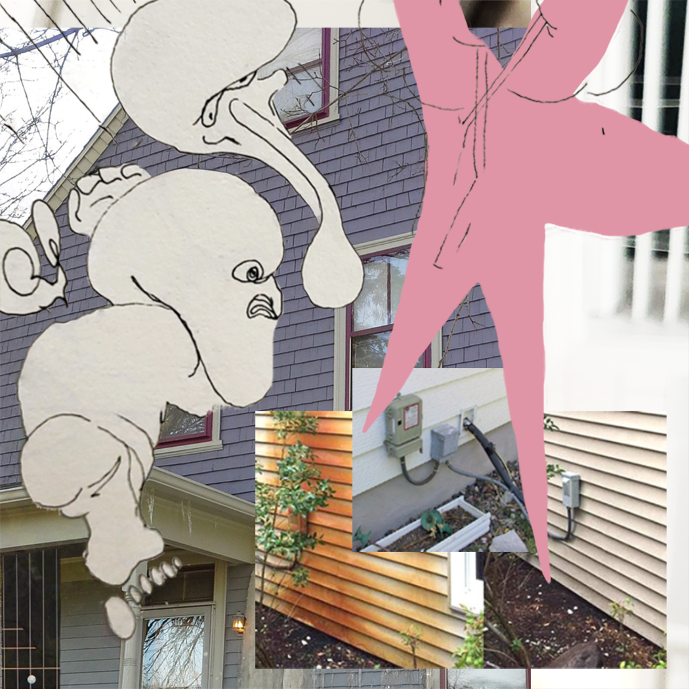

adlow.online 
Dissolved It All - 2024


| links | |
|---|---|
 |
bandcamp soundcloud spotify applemusic |
desc
a collage of field recordings, samples, piano, and various wind instruments, Dissolved It All was composed in a 2 month fervor during winter 2023-24. Alternating between school practice rooms and my closet studio, this project was an excercise in experimentation. The cover art was made in collaboration with my brother, Rowan. A small run of repurposed vintage tapes, hand stamped, spliced, labeled, and numbered followed one year later. The A-side contained all of 'dissolved', while the B-side contained remnants of the vintage radio programs which originally found home in those shells.